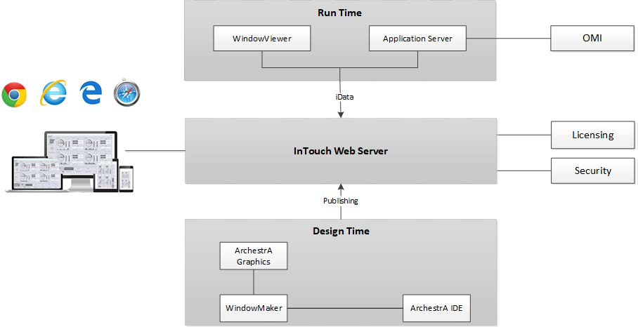
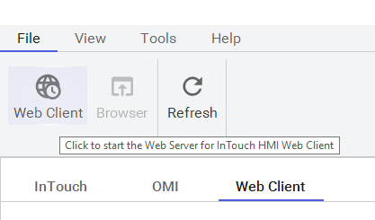
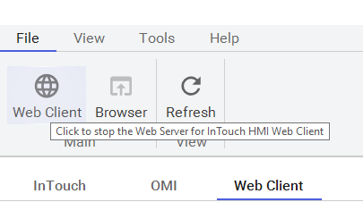
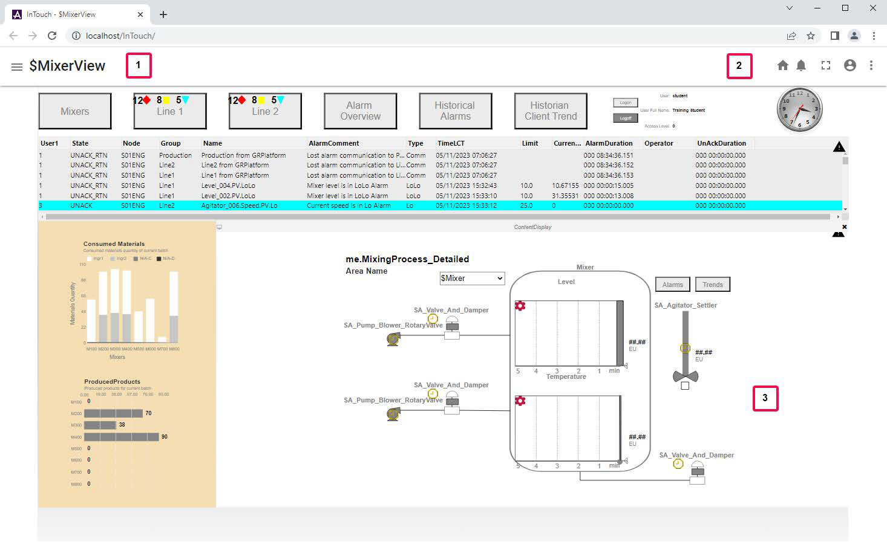

Page 0527
Module 8 — Web Client | Pages 527–536





Do Not Copy Module 8 – Web Client Section 1 – Web Client Overview 8-3 Lab 23 – Using the Web Client 8-11
Do Not Copy 8-2 Module 8 – Web Client AVEVA™ Training Module Objectives Describe the Web Client features and dependencies Explain how to enable the Web Client Explain how to navigate graphics in the Web Client Explain the use of the Web Client fast switch
Do Not Copy Section 1 – Web Client Overview 8-3 AVEVA™ InTouch for System Platform 2023 Section 1 – Web Client Overview Overview The InTouch Web Client feature (Web Client) allows you to view specific Industrial graphics used within an InTouch for System Platform application on any HTML5-supported web browser. A built- in web server enables web browsers access to application graphics, from any Microsoft Windows client or server operating system without the use of Remote Desktop Protocol (RDP) or Internet Information Services (IIS) for Microsoft Windows Server. You can view application Industrial graphics in a web browser for Managed applications only. Enable Web Client By default, the Web Client is disabled to secure systems where no decision has been made to enable a web server on the installation machine. You must have administrative privileges to enable or disable the Web Client feature. The Web Client is enabled from the AVEVA Application Manager, on the Web Client tab. When the Web Client is not started, the Web Client icon shows a small clock. To start the Web Client, click the Web Client icon. This section describes the Web Client features and dependencies.
Do Not Copy 8-4 Module 8 – Web Client AVEVA™ Training Once the Web Client starts, the small clock no longer appears on the Web Client icon. Configure InTouch Application Graphics for Viewing in a Web Browser You can use the Industrial Graphic Toolbox in WindowMaker to configure the folder containing application graphics that will be displayed in the web browser Only graphics stored in the folder set as the Web Client root folder are displayed in the web browser. A single symbol within the Web Client Root Folder may be configured by enabling Set Web Client Home Symbol. The home symbol will be automatically selected and displayed when the InTouch Web Client is accessed using a browser. Additionally, the Web Client interface provides a home button which may be used to display the home symbol. The home symbol is marked in the Industrial Graphic Toolbox with a home icon.
Do Not Copy Section 1 – Web Client Overview 8-5 AVEVA™ InTouch for System Platform 2023 Web Client Fast Switch When using the Web Client with InTouch for System Platform, WindowViewer must be running to provide data for the Web Client. Initially, the Web Client fast switch in WindowMaker may be disabled if the InTouch application path is not set to the current application path. This can occur after importing and starting a restored InTouch application or after switching InTouch applications. For InTouch, starting WindowViewer with the Runtime fast switch will do the following: Set the application path to the current application and builds the application's Web folder Enables the Web Client fast switch in WindowMaker (if disabled) Starts WindowViewer which provides data for Web Client animations
Do Not Copy 8-6 Module 8 – Web Client AVEVA™ Training Web Client Page The InTouch Web Client page provides various options to inform and organize the user experience using icons on the page. The following table describes these options. Element Description 1 The InTouch application name appears on the title bar, along with a hamburger button. You can click the hamburger button to view the folder navigation display. All folders and symbols under the selected Web Client root folder appear in the list. 2 The Home, Share, Notifications, Full Screen, and Profile icons appear on the title bar. You can click Notifications to view messages related to connection and licensing issues. 3 The canvas area displays the graphic selected from the navigation overlay. The graphic will be scaled to fit the browser viewport size, while maintaining the aspect ratio. The navigation and notifications overlays do not consume any space on the canvas or affect the size of the graphic.
Do Not Copy Section 1 – Web Client Overview 8-7 AVEVA™ InTouch for System Platform 2023 Pan and Zoom Support InTouch Web Client supports the Pan and Zoom gestures for all supported browsers and devices. The pan and zoom capabilities are similar to Frame Window support on WindowViewer. When a graphic in the web browser is zoomed in from a non-mobile device, the zoom percentage is displayed in the lower left corner of the horizontal scrollbar. The zoom percentage is limited up to 500%. Behavior of the Web Client Home Button Standalone applications can be viewed on the web client. Standalone application windows must be converted to Industrial Graphics before they can be viewed on the Web Client. For InTouch applications, in WindowMaker you can use the Home Windows tab to set up windows that will appear by default in WindowViewer. Similarly, you can set a graphic to be the default symbol that appears on the web client when it is launched. These settings will impact, which window or graphic appears on the web client by default when it is launched. For an InTouch application; there are two possibilities: If Home Windows are configured, even if the user has configured Home Symbols, on all occasions, only the Home Windows are displayed by default. Clicking the Home icon will display the Home Windows. If Home Windows are not configured and the Home Symbol is configured, by default the home symbol will be displayed. If no Home windows and no Home symbol are configured then, by default, no symbol or Home windows are displayed. Clicking on the Home symbol will not display any graphic or window. Symbol Changes Reflected Automatically Graphic-related changes are made using the Graphic Editor, and those changes are automatically refreshed in the browser. However, changes in Quality and Status Style, Element Style, and Formatting Styles (for InTouch) are propagated only after making the following graphic changes or re-launching WindowViewer: Content of symbol is updated and saved Symbol is created, imported, or deleted Symbol is moved to different toolset folder Root folder or home symbol assignment is updated Displaying Individual Symbols Via URL To display an individual symbol in a browser you may use the following syntax: http://
Do Not Copy 8-8 Module 8 – Web Client AVEVA™ Training supported at this time. For a detailed list and description of known limitations with Web Client consult the PDF file entitled Viewing InTouch Application Graphics in a Web Browser. Licensing for InTouch Application Graphics in a Browser Without a license installed, Web Client permits a single session use. This will usually allow you to connect a single browser to the InTouch Web Server, even permitting more than one tab to be opened, which is considered part of the same session. Without a license, a second browser would not be able to access the Web Server. For full unrestricted use of Web Client, you need a valid Web Server license to login and view application graphics from a web browser. The Web Server provides two types of licenses: The Web Server Unlimited Read-Only license will allow you to connect to unlimited sessions for viewing application graphics in a web browser The Web Server Unlimited ReadWrite license will allow you to connect to unlimited sessions for viewing and interacting with application graphics in a web browser Acquiring a License After the Web Server starts up, it will first Authenticate the user and then determine the user’s Authorization. During authentication, the web server will validate if the user is part of either the "aaInTouchUsers" or the "aaInTouchRWUsers" to be authenticated to use the Web Client. Both the user groups will be created during installation. The login user at the time of Web Client installation will be automatically added to both user groups. Additional users can be added later. After adding the new user to the group, the new user must log off and then re-login for the change to take effective. Next, the web server determines authorization for Read-Only or ReadWrite capability. First, the web server will attempt to acquire the ReadWrite license. If a ReadWrite license is not available, then it will attempt to acquire the Read-Only license. If a ReadOnly license is not available, then the web client will operate in a Single Session Mode. Authorization for Read-Only and ReadWrite Modes The Web Client supports two types of authorization modes: ReadWrite and Read-Only. In the ReadWrite mode, the user can: Write to external references such as Application Server attributes or InTouch tags Acknowledge alarms with details of the operator You can access the Write and Alarm Ack capability if both the following conditions are met: The Web Server has acquired the Unlimited ReadWrite license The user logged in to Web Client session is part of the aaInTouchRWUsers user group If ReadWrite mode is not available, then the Web Server attempts the Read-Only mode. The user can access the Read-Only mode only if: The Web Server has acquired the Unlimited ReadWrite license, but the user logged in does not belong to the Web Client aaInTouchRWUsers user group, or The Web Server has acquired the Unlimited ReadOnly license, or The Web Server does not acquire any license and this web client session is the first client session In the Read-Only mode, the client session cannot write to external references or acknowledge alarms.
Do Not Copy Section 1 – Web Client Overview 8-9 AVEVA™ InTouch for System Platform 2023 Single Session Mode If the Web Server does not acquire any license at startup, it will operate in the Single Web Session mode, which is assigned on a first come first serve basis. If a valid license is unavailable and the first session license has been acquired, the Web Client will notify the user that no licenses are available The Web Server allows sessions a grace period if the Web Server has acquired an unlimited license, but subsequently loses the license Web Client Application Windows Web Client will convert all Frame Windows in your application and make them available from the hamburger menu. Additionally, when you open Web Client, if Home windows are configured and the Home windows are Frame Windows, your Home windows will be displayed. Any application navigation configured, such as buttons to show windows or scripting using ShowGraphic(), ShowHome, or Show script functions, these will behave normally as if they were in WindowViewer. For example, Replace window functionality behaves normally in Web Client by closing any window the Replace window touches. When using this with ShowGraphic(), the identity property using InTouch:WindowName syntax, will properly identify the XY and width and height of the window for replace purposes. However, if the identity property does not used the InTouch: syntax, which causes it to create a brand new popup window in the Web Client, this window will act like a regular popup window by displaying on top of the other windows.
Do Not Copy 8-10 Module 8 – Web Client AVEVA™ Training
Review the sections above for the main topics, step-by-step procedures, and important configuration details.
This is part of the InTouch HMI layer, which integrates with Application Server's Galaxy for a complete visualization solution.
Module 8 — Web Client. AVEVA InTouch for System Platform 2023 Training.
Next: Lesson L40 — Lab 23 – Using the Web Client